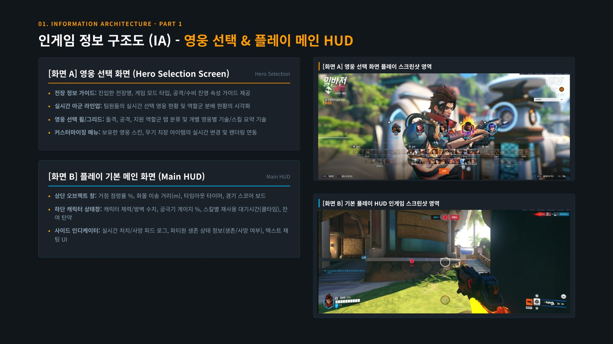
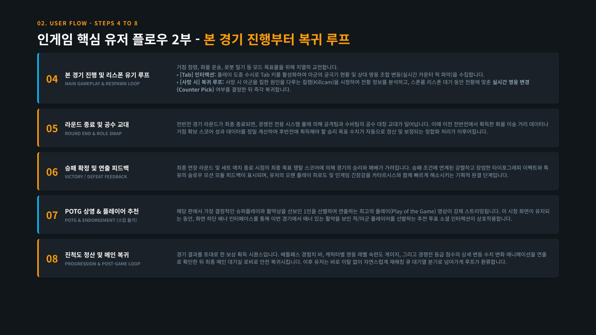
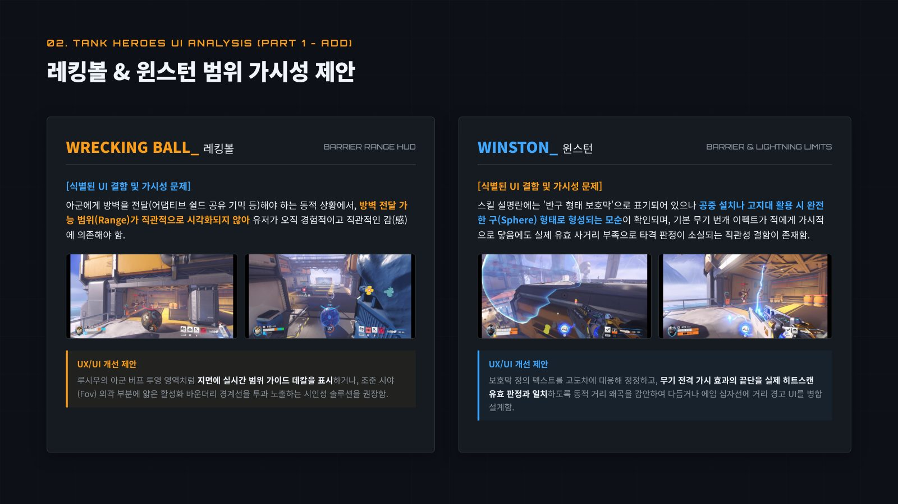
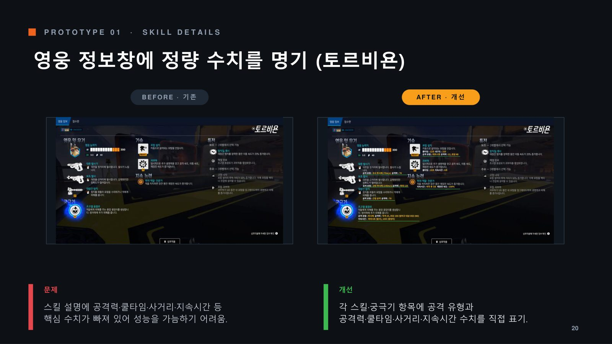

오버워치 2 UI/UX 개선 제안
기간
2026년 1학기
분류
UI/UX 분석개선 제안
형태
‘게임UI/UX실습’ 과제, 3인 팀
담당
개인 조사: 정보 구조(IA)·유저 플로우 분석, 탱커 영웅 HUD 분석
팀 공동: 개선 프로토타입 4종
팀 공동: 개선 프로토타입 4종
도구
Figma (프로토타입 시안)
한 줄 소개
오버워치 2의 HUD와 스킬 안내를 분석해, 화면에 드러나지 않는 조작 규칙과 사거리·궤적 정보를 보여주는 개선안을 제안

오버워치 2를 플레이하며 직접 캡처한 화면을 바탕으로, 인게임 HUD와 영웅 스킬 안내를 네 가지 기준으로 평가했습니다. 시인성(교전 중에도 정확히 보이는가), 행동 유도성(형태만 보고 조작을 유추할 수 있는가), 정합성(원작 경험을 유지하며 혼잡을 줄였는가), 일관성(영웅별 표기가 통일되어 있는가)입니다.
개인 조사 ① 정보 구조(IA)·유저 플로우
- 영웅 선택, 메인 HUD, 전황판(Tab), 시스템 메뉴(Esc), 경기 종료 화면에 어떤 정보가 있는지 화면별로 정리했습니다.
- 매칭부터 로비 복귀까지의 흐름을 8단계로 나눴습니다.
- 사망 후 킬캠을 보고 영웅을 바꿔 복귀하는 카운터 픽 루프, 패배 후 스킵할 수 없는 POTG와 추천 투표로 감정을 전환시키는 경기 종료 흐름을 UX 관점에서 분석했습니다.


개인 조사 ② 탱커 영웅 HUD 분석
레킹볼, 윈스턴, 로드호그, 라마트라, 정커퀸, 둠피스트, 해저드와 스킬창·스코어보드를 분석했습니다. 스킬 설명과 실제 동작이 다른 부분, 조작 규칙이 화면에 안내되지 않는 부분을 찾는 데 집중했습니다.
- 윈스턴 방벽은 설명에 ‘반구 형태’로 적혀 있지만, 공중에 설치하면 구 형태로 생깁니다. 설명을 고도에 맞게 고치자고 제안했습니다.
- 로드호그 숨돌리기는 E키를 다시 누르면 회복을 멈출 수 있지만 HUD 어디에도 안내가 없습니다. 상태창에 취소 안내를 넣자고 제안했습니다.
- 해저드는 ‘베기’의 발사와 회수가 같은 Shift 키인데도 조작 안내가 화면 양쪽에 중복으로 나옵니다. 중앙 한 곳으로 합치자고 제안했습니다.

팀 공동 작업
- 역할군과 실력대가 다른 가상 유저 페르소나 4명을 설정해 시나리오를 분석했습니다.
- Figma로 개선 프로토타입 4종의 Before → After 시안을 만들었습니다: 영웅 정보창 정량 수치 표기, 아군 궁극기 오버레이, 조준·탄약 HUD, 무기 회수 인디케이터.
- 영향도와 시야 차단 정도에 따라 개선 우선순위를 정리했습니다.

페르소나는 가상으로 설정한 인물이며, 실제 사용성 테스트는 진행하지 않았습니다. 스크린샷은 직접 플레이하며 캡처했고, 오버워치의 저작권은 Blizzard Entertainment에 있습니다.